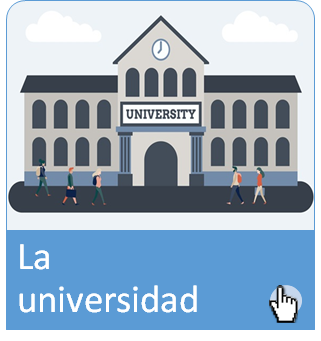
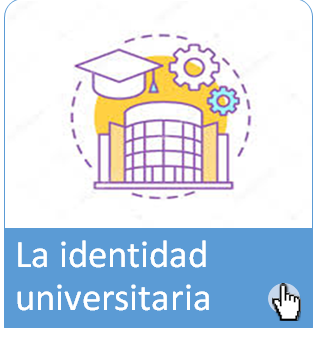

Para empezar…
Para comprender el surgimiento y la propuesta educativa del sistema de enseñanza de la Universidad Autónoma Metropolitana Unidad Xochimilco es necesario mencionar de manera breve lo siguiente:




Para comprender el surgimiento y la propuesta educativa del sistema de enseñanza de la Universidad Autónoma Metropolitana Unidad Xochimilco es necesario mencionar de manera breve lo siguiente: